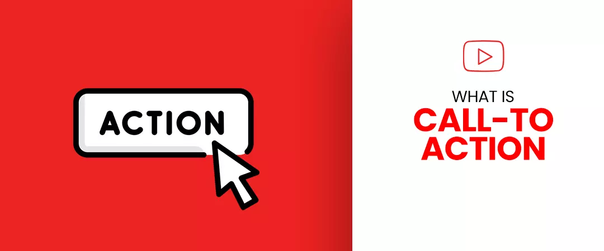
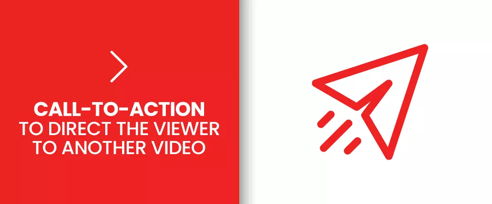
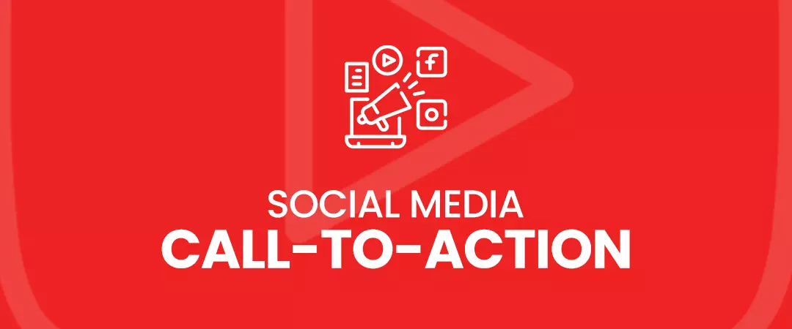
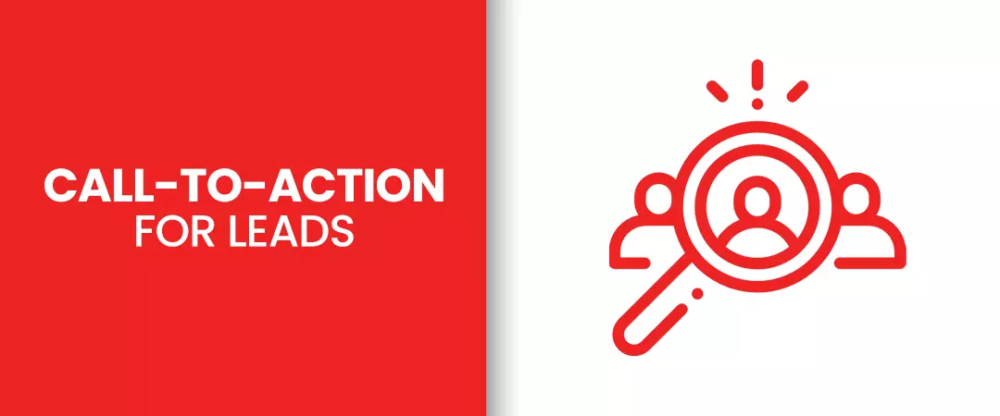
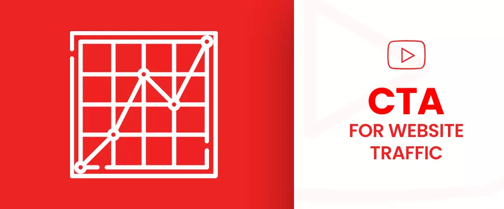
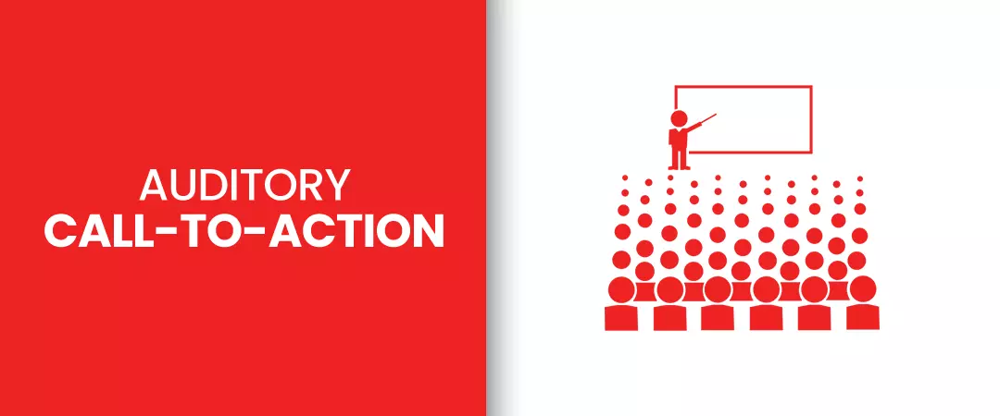
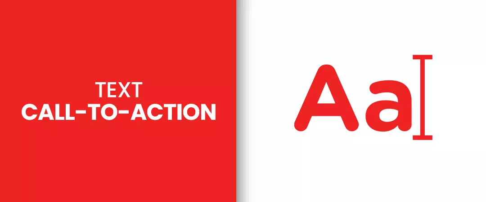
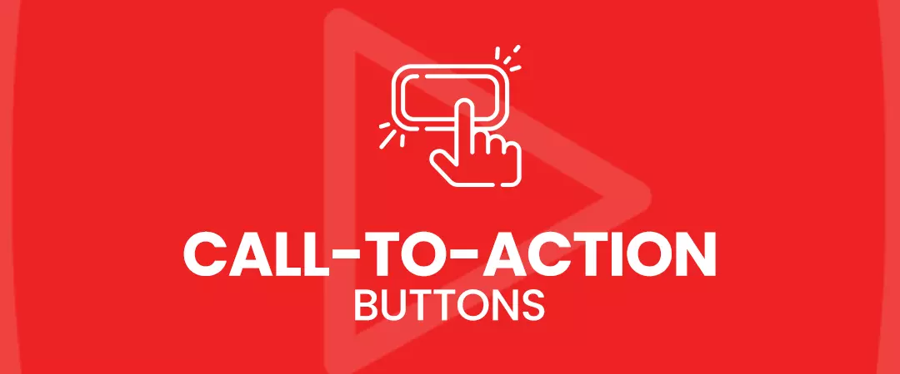

YouTube Video Call-to-Actions influence people to do something that YouTubers want them to do. YT as a platform has provided great ways for creators to add Call-to-action in YouTube videos. So, before we dive deep into the process, you need to be aware of your goals and what action would be required from your viewers to convert to your goals.
YT is an Ideal platform for creators – It has a massive user base, and you just need a smart device connected to the internet to reach them. With effort and dedication, you can attract thousands of people into your marketing funnel to flourish your business. YouTubers can drive relevant traffic to a website, social platform, e-commerce store, etc. From the study conducted by ComScore, YouTube extended its reach to 95% of adults online who were above 35 years of age. Hence, there’s a huge potential and opportunity for marketers to exploit this medium for maximizing sales.
As an online video platform, YT facilitates communication between the audience and creators, making it a great source of valuable insight that the brands can incorporate into their offerings.
Let us begin by understanding YouTube Call-To-Action and how it can benefit you.
What Is a Call-To-Action?

Call-to-Action means Instructing / influencing / directing someone (Through a click etc.) to do something( Your sales goal ) that you want by utilizing some device or content. In our everyday social and web interaction, you may have come across many such CTAs
Some of the CTAs include:-
-
Sign-up for newsletter
-
Register and download Pdf
-
Visit the website for a free e-book
-
Buy our merchandise NOW at our store
-
Subscribe to our channel
-
Sign-up and get a free one-on-one consultation
As you can see, Call to action is not limited to sign-up or purchase – they also include asking people to subscribe, turn into Leads, watch a video, or send people to the website to look at your offerings.
Sometimes Call-to-Action can also be verbal where you don’t have to include a button or caption. The most common Verbal CTA is asking people to “subscribe to the channel,” which usually happens at the end of the video.
You want people to do something more, in addition to just watching your videos. Hence YouTube video Call-To-Action is essential to force action from your audience and make them do some you want them to do.
What are the different types of CTAs depending on your goal?
Start of the video CTA
A study conducted by KissMetrics reveals that 20% of viewers leave videos of 1-minute duration and 40% of viewers get out of videos which are of 2-3 minutes duration without watching the complete video. If you have your CTA at the end of your video, then a significant portion of your audience is never seeing your CTA, hence placing your CTA at the start of your video is a better strategy that can yield increased subscribers, likes, comments, and shares. Viewers are known to leave the video as soon as they consume the information they needed so if viewers are exposed to a compelling CTA initially, the audience can be convinced to watch the entire video and complete your desired action.
CTA to direct the viewer to another video

Once you have built a community of loyal audience who dedicatedly watch your videos – you have gained credibility and established yourself within your niche. More views will raise overall watch time on your videos, watch time is a crucial factor for the algorithm to rank a video. Hence you must funnel your audience from one video to the next.
To keep the audience on your channel and watch more of your videos, you can suggest videos related to your current video content. People that like your content will choose to watch another of your similar video, instead of the YT recommendations from auto play.
CTA for channel subscription
A large number of subscribers almost guarantee more watch time. Your subscribers are more likely to watch your video for a longer duration as compared to Non-subscribers, so influence your audience to become your subscriber. Watch time accumulated by your video's results in a higher ranking of your content in SERPs and the video is also seen more often in the related section.
The audience that subscribes to your channel and has pressed the bell icon for notification is essential. YT will send timely reminders to your subscriber's homepage whenever you upload a fresh video, hence another way for betterment is to influence the viewers to press the bell icon as well. – This results in your videos getting more views.
The algorithm also monitors the performance of all your videos. YouTube tends to increase the ranking of video that has managed to convert the maximum number of viewers into subscribers.
Let us take an example of Business Insider, In the last 15 – seconds of their YT videos, Business Insider uses engaging Call-to-Action in their YouTube videos to compel the audience to convert into subscribers. Viewers can take their time and subscribe at the end of the video.
Social Media CTA

Your loyal subscribers will also be interested in interacting with you and consuming your content on different social platforms. One best practice would be to create a template consisting of links leading to your various social handles. Use the Template in each of your videos. You can put CTA on YouTube videos asking people to interact with you on social platforms outside of YouTube.
You can also add social media links at the top of your banner art.
To add links to your social platforms:
-
Go to your channel after logging into YouTube.
-
Click the gear icon to get redirected to your channel setting – A dialogue box opens, hit the switch on "customize the layout of your channel" – You can add social media links by using this option.
-
Close the dialogue box and select the "Edit Links" option on the upper right corner of the banner. You can begin inserting your social links.
-
You also have the option of placing social media buttons in your videos. Your audience can also become your followers on other social media networks.
For YouTube video call to action example, let us look at Walt Disney, who placed social media buttons at the end of their "Frozen 2" Trailer – encouraging people to follow the movie accounts on Facebook, Instagram, and Twitter. Walt Disney created more hype for the movie by constantly rolling out new content for its social platforms.
CTA for Leads

Blogs, email marketing, or social platforms are not the only things you can use to gain your highest grossing content exposure. You also have the option of attaching the material to your videos.
YT video can serve as a medium that provides in-depth information on the subject of your lead generation content or can be used as the content sneak peek.
CTA for website traffic

YT provides various in-build features. One of them is End-screen which can be used together with a verbal CTA to drive visitors to your website. Suppose you have a strong community of subscribers who spend a lot of time watching your videos and are fascinated by your brand and content. In that case, there is a high possibility that they will patronize you if you decide to start selling from your channel.
For example, a popular channel, "Dude perfect," which boasts a staggering 59 million subscribers, monetized their channel by using end screen to sell their merchandise by directing viewers to their online e-commerce store.
Description CTA
You have the option to use a description for your CTA to prompt users to take some action – You can do this if you do not want to distract your audience with a pop-up call-to-Action. Or you have used all the space allocated to the End-screen. Hence you have nowhere to add additional CTA.
More times than not, viewers read the description before diving into the video. People can read the narrative between the footage if the content demands or at the end of the video. Either way, this makes the description an ideal alternative for Call-to-Action.
YT singer Conor Maynard uses the description for CTA on YouTube to direct viewers to his Spotify page, apple music, social media profiles, podcast, and channel.
Auditory Call-To-Action

Brian Dean of Backlinko found that people share videos on their social media handles, using the share button YouTube. Recommending videos to more viewers will ultimately get more watch-time for the content and benefit the channel. YT algorithm considers comments and the number of shares as essential factors to determine the popularity of content –YT improves the ranking of videos that get passed around a lot.
You can use a compelling CTA on YouTube to ask your audience to share your videos or give their opinions by discussion. Research by Backlinko analysed 1.3 million YouTube search results and found a meaningful correlation between comment and ranking.
CTAs to use for your YouTube channel
Here, we will look at three different CTA on YouTube:
Vocal Call-To-Action.
If your video involves a person taking in front of the camera, you can include a vocal Call-To-Action. If you are the one in front of the camera or if you tasked someone to do it for you - make sure to inform the viewers what they have to do next. The Action can include asking the audience to subscribe to the channel, watch another of your videos, comment their opinion, visit your website, purchase a product, or any other action you would want your viewers to take.
For example, Dude perfect, who runs a sports channel on YouTube, always asks their viewers in the Outro of their video to subscribe to their channel, visit their website, and check out their merchandise. This method is popular among many YouTubers.
Text Call-To-Action

Titles and descriptions are great for YouTube video Call to Action; this is an ideal option if you want your viewers to visit a website with a promotional code or some other text-based data that people could easily forget after some time. Text-based CTA is not limited to video format. Call to Action that involves written text can also be used on a landing page or blog post – this technique is highly impactful if a call-to-action button is used.
Call-To-Action Buttons

YouTube CTA buttons are used to direct users to take a particular action. YT gives creators the ability to incorporate Call-to-Action buttons in their videos. Call-To-Action buttons can handle a wide variety of forms – whether a Channel subscribe button or Website redirection button.
YouTubers can use Cards or End-screens to use the call-to-action button. YT Ads is yet another attractive call-to-action option.
I hope you found this as a useful guide to YouTube Call-to-Actionand how to use them in your video.
Feel free to share!